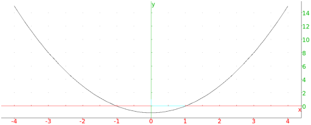
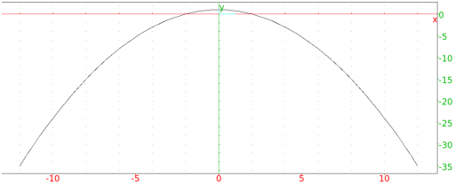
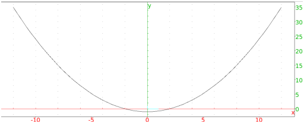
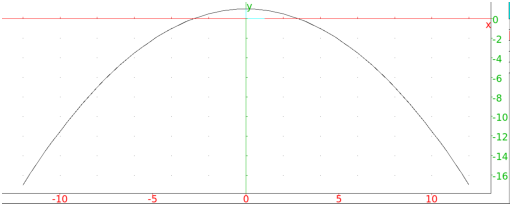

13.12.3 The parabola in the plane: parabola
See Section 14.11.3 for parabolas in space.
The parabola command draws parabolas and other conic
sections.
parabola can take parameters in different forms.
-
-
parabola can take one argument:
eqn, a second degree equation in the variables x
and y (or an expression which will be set to zero).
- parabola(eqn) returns and draws
the conic section given by the equation eqn.
Example
Input:
parabola(x^2 - y - 1)
Output:

-
parabola can take two arguments:
F,V, two points.
- parabola(F,V) returns and draws the parabola with
focus F and vertex V.
Example
Input:
parabola(0,i)
Output:

-
parabola can take two parameters:
-
A=(a,b), a point.
- c, a real number.
- parabola(A,c) returns and draws the parabola
y = b + c(x − a)2.
Examples
-
Input:
parabola(-i,1)
Output:

- Input:
parabola(-i,i,1/2)
Output:
